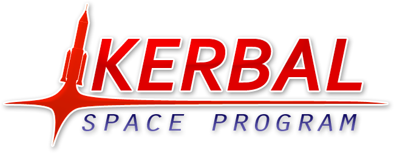

This page contains a list of other interesting aspects that I want to share in one way or another. If you read this page and we meet, any of these topics will be a good conversation starter that could last an entire evening.
Rocket League
 Rocket League has been my Esport of choice both for watching and playing for a long time now. I started playing it basically when I arrived on Steam and have been quite decent at it as well. For people who don't know the game, it is exactly what you imagine if you combine Football and Cars. A predecessor made by the same team probably had a more descriptive name: Supersonic Acrobatic Rocket-Powered Battle-Cars. Anyways, it's a great sport to get into watching Esports online.
Rocket League has been my Esport of choice both for watching and playing for a long time now. I started playing it basically when I arrived on Steam and have been quite decent at it as well. For people who don't know the game, it is exactly what you imagine if you combine Football and Cars. A predecessor made by the same team probably had a more descriptive name: Supersonic Acrobatic Rocket-Powered Battle-Cars. Anyways, it's a great sport to get into watching Esports online.
Kerbal Space Program
At the time of writing, my second most favorite game on Steam. It is basically "Orbital Mechanics, The Game" with a bit of "Babies first Tsiolkovsky Rocket Equation" thrown in for good measure. As per usual Randall Munroe probably described it the best. If you ask me, going RP-0 with Real Scale Solar system is the only way to live (and get very, very frustrated).
Productivity
 Although the book as aged quite badly, I can still recommend David Allen's Getting Things Done book for everyone. Combining the ideas of this book with a modern TODO list app (I'm currently using Todoist after switching away from Omnifocus) really helps reducing stress levels in addition to increasing productivity. In addition to that, throw in a bit of Pomodoro magic and keep those new tasks coming.
Although the book as aged quite badly, I can still recommend David Allen's Getting Things Done book for everyone. Combining the ideas of this book with a modern TODO list app (I'm currently using Todoist after switching away from Omnifocus) really helps reducing stress levels in addition to increasing productivity. In addition to that, throw in a bit of Pomodoro magic and keep those new tasks coming.
Podcasts
Listening to podcasts has been another staple of entertainment in my life for quite a long time and it is especially useful here in New York to pass the time on those pesky subway rides. Some of my recommendations of podcasts are:
- CppCast: A for C++ developers. Discussion topics range from new and interesting libraries over language features all the way to C++ standard discussions.
- Freakonomics Radio: One of the two economics-focussed podcasts on my list. It can be quite enlightening to listen how other people reason about the world and learn interesting facts in the process.
- Podquisition: Jim Sterling's (The Jimquisition), Laura K Dale's, and Gavin Dunne's (Miracle of Sound) podcast that is, mostly, about video games and to keep up to date on video game news.
- No Dumb Questions: My newest addition from the two-dudes-talking genre of podcasts. Destin Sandlin (Smarter Every Day) and Matt Whitman (10 Minute Bible Hour) discussing arbitrary topics.
- Planet Money: Similar to Freakonomics Radio, an economics-focussed podcast about explaining everyday events and items through the looking glass of economics.
- 50 Things That Made the Modern Economy: A BBC podcast where the title gives everything away. They cover the 50 biggest inventions that shaped the world around us into what it is today.
- 99% Invisible: Roman Mars explaining the design aspects of things that are around us daily but to which we normally don't pay any attention.
- Cortex: CGP Grey and Myke Hurley's two-dudes-talking podcast about productivity and their careers. Very useful to listen to other people talking about their self-employment careers.
- Hello Internet: Brady Haran and CGP Grey's two-dudes-talking podcast. This is also about any arbitrary topic, but since both hosts are involved in making Youtube videos, that's one reoccuring topic.
- Pod Save America: A podcast by four former aides to President Obama, Jon Favreau, Dan Pfeiffer, Jon Lovett, and Tommy Vietor, that discuss the current news and provide their side of the story.
- What Trump Can Teach Us About Con Law: A second podcast by Roman Mars where he and Professor Elizabeth Joh discuss the current political news through the looking glass of Constitutional Law.
YouTube Channels
These are some of the Youtube channels that I'm following. Judging by my growing list of "Watch later" videos, I'm clearly subscriped to more channels that I have the time to watch.
- CGP Grey: An educational channel that occasionally releases shorter videos explaining all sorts of topics.
- Computerphile: An educational channel that is focussed on the hardware and software side of computer science.
- CppCon: On this channel, all recorded talks of the CppCon, an annual C++ focussed conference are released.
- CrashCourse: An educational channel with many sub-channels that cover everything from world history, sociology, to chemistry.
- Geography Now: An educational channel where the host explains each country of the world alphabetically in bite-sized 10 minutes videos.
- Healthcare Triage: An educational channel about the news, grand ideas of healthcare, and also providing information about other medical topics..
- IntelligenceSquared: On this channel the live Intelligence Squared debates are broadcast and cover a wide array of topics.
- Jim Sterling: The channel of the Jimquisition, a weekly show that covers current events in the game industry and their shady practices.
- Jonathan Blow: The developer of Braid and The Witness talking mostly about his project of developing a new programming language for his next game.
- Kurzgesagt: An educational channel that covers a wide array of grand-theme topics in quite substantial detail and with high production value.
- MasonRL90: A channel mostly focussed on Rocket League tips and tricks. Recently also started covering Playerunknown's Battleground.
- Matt and Tom: A shorter variant of the two-dudes-talking podcast but as a video, more often than not discussing events on Tom Scott's main channel.
- minutephysics: A series of short, hand-drawn and animated stick figures that explain a large variety of physical phenomena.
- miracleofsound: A music channel by Gavin Dunne where he releases all of his video game-based music soundtracks.
- Numberphile: One of the Brady Haran channels covering mathematical topics of all kind by almost exclusively talking to scientists in the field.
- Objectivity: Another Brady Haran channel exploring the archives of the Royal Society and discussing its history and discoveries.
- OfficialNerdCubed: A funny and entertaining gaming channel that covers a large variety of games. Come for the games and stay for the laughter.
- PBS Space Time: An educational channel that covers mostly grand-scale astrophyiscal topics.
- Periodic Videos: Yet another Brady Haran channel that is dealing with chemistry. Has at least one video on every element on the periodic table.
- Preston Jacobs: On this channel, Preston analyzes the Song of Ice and Fire book series and also provides and episode analysis of the Game of Thrones TV series.
- Real Engineering: An educational channel that explores different engineering focussed topics.
- SciShow: An educational channel that covers a very large array of topics and explains these in mostly 4-5 minute episodes.
- SciShow Psych: A spin-off of the original SciShow that has focussed topiced on psychological phenomena.
- SciShow Space: Another spin-off of the original SciShow, this time focussed on astronomical and astrophyiscal topics.
- Scott Manley: On this channel, Scott mostly plays and explains Kerbal Space Program. It is the best resource for every new player to learn about the basics of the game.
- Sixty Symbols: Another Brady Haran channel mostly focussed on all kinds of physics-oriented topics.
- SmarterEveryDay: An educational channel that covers a large variety of topics, primarily interested in surprising and unexpected experiences.
- The Great War: An educational channel that is covering the First World War by following the events that happen every week 100 years ago.
- The Slow Mo Guys: A channel centered around slow motion cameras and showing the world at really slow speeds and present what cannot be seen.
- Tom Scott: An educational channel that is these days primarily focussed on travelling to interesting locations and explaining the engineering or science performed there.
- TotalBiscuit: A gaming channel that is a mix of industry commentary and reviews. Also hosts the weekly Co-optional podcast.
- Veritasium: Another educational channel that is covering a large variety of topics, but with a point of origin of educational content.
- VICE: A news channel that is covering current-ish events in the worlds in varying depth ranging from 2 minute to 2 hour pieces.
- Vintage Space: Amy Shira Teitel's channel that explains the history of early space exploration.
- Vox: Another journalistic channel that covers a large varierty of current events.
- Vsauce: An educational channel whose videos move seemingly randomly through a large variety of topics, but always focussing on a fixed topic.
- wtfmoses: A gaming channel that exclusively covers Playerunknown's Battlegrounds, both with gaming footage as well as tutorial videos.
Book recommendations
- Superintelligence: A book by Nick Bostrom about the dangers of developing artificial intelligence and how it might endanger our future. This book changed my views on AI by 180°
- Song of Ice and Fire: It's the original book series for Game of Thrones. After the disappointing sixth and seventh season, it's refreshing to go back to the original.
- The Dictator's Handbook: A great book about understanding politics and scheming in organizations. The books subtitle "Why Bad Behavior Is Almost Always Good Politics‎" probably says it all.
- The Martian: A book by Andy Weir which has since been made into a successful move. Mark Watney is stranded on Mars after an accident and has to survive the harsh conditions on Mars.
- The Expanse Series: A book series by Daniel Abraham and Ty Franck about a realistic and gritty future where space travel through the solar system is possible. Made into a TV series, too.
- Failure is Not an Option: A memoir by Gene Kratz, the flight director responsible for the Mercury, Gemini, and Apollo era space craft at NASA.
- Star Wars: Darth Plagueis: A book about Darth Plagueis, the master of Darth Sidious and how he got to power.
- Mogworld: Written by Ben, Yahzee, Crowshaw, it is a book about what would happen if an NPC in an MMORPG would become sentient.
- Cockpit Confidential: Adopted from excepts of his blog, Patrick Smith, a pilot, explains common questions that people would have if they sat down with a pilot for a beer or two.
- A Man on The Moon: The book about the moon shot by Andrew Chaikin in which he describes the flights of the Apollo program. He sat down with all (at the time) living astronauts to get their stories.
- Ready Player One: A book about a dystopian future in which everyone lives in "The Oasis", a fully immersive virtual reality environment and is looking for the ultimate golden ticket.
- Elon Musk: A biography about Elon Musk, covering his entire life until 2016, when this book was written.
- Steve Jobs: A biography about Steve Jobs, written by Walter Isaacson, and is probably the most complete retelling of his life.